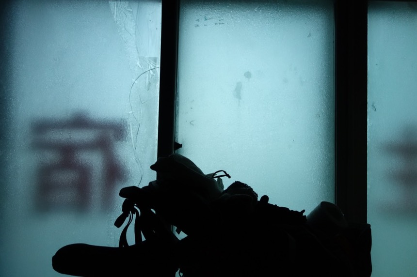
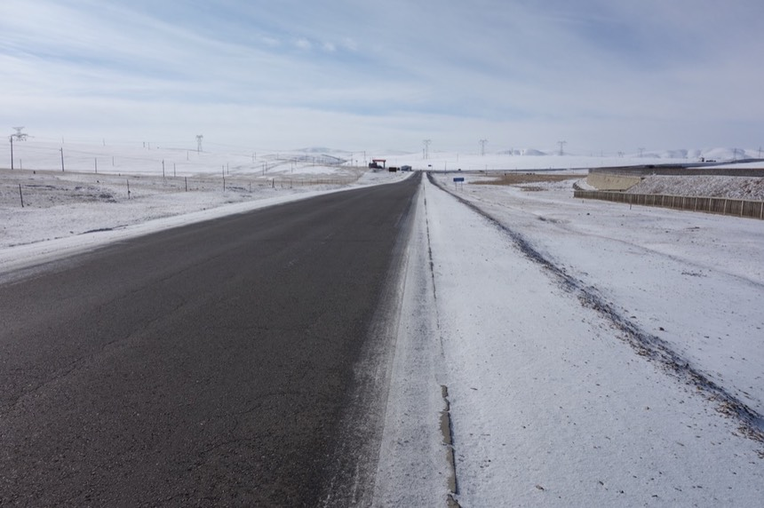
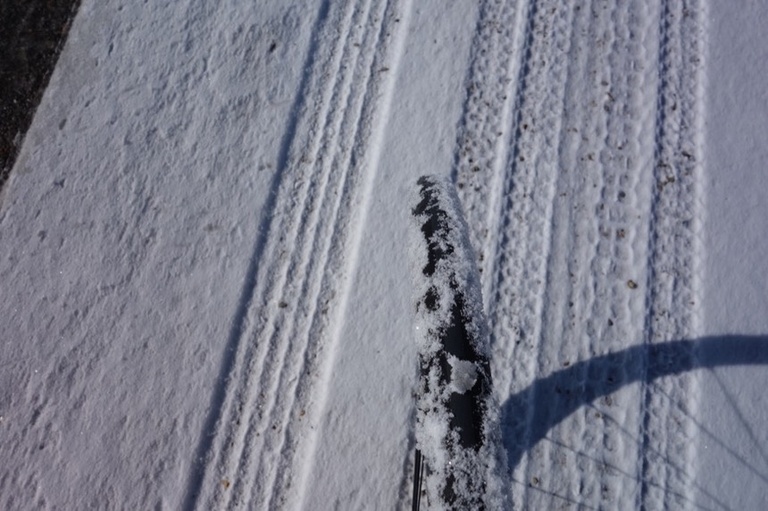
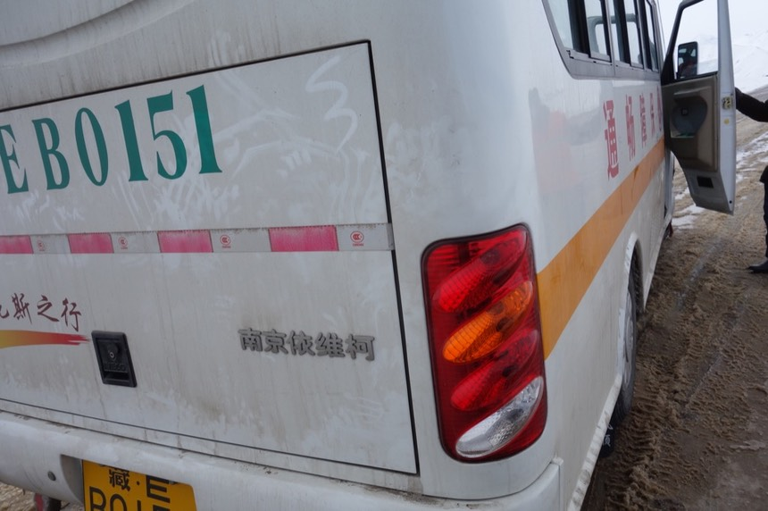
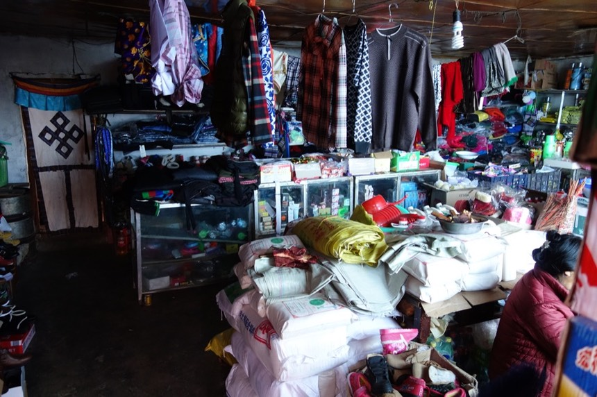
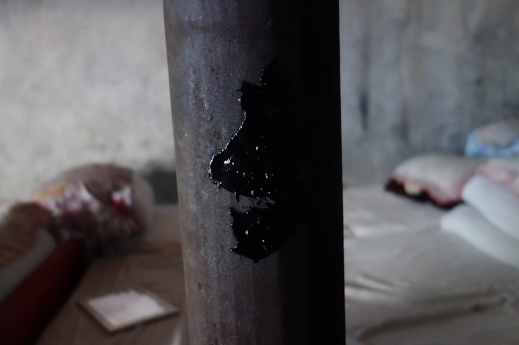

10/31 Day 11 古露
仔細想想，我已經幾天沒洗（擦）澡了？
從離開格爾木，正式進入青藏公路開始，第一天西大灘，通鋪中有其他人住宿，不好意思脫衣服擦澡。
第二天，睡在兄弟倆的卡車，也沒能擦澡，第三天，睡在那曲，本來想擦澡，結果突然冒出一個工人和我同房。
所以也不好意思脫衣服，只是簡單的泡泡腳而已，三天了，整整三天沒洗（擦澡） = =

但現在回想起來也覺得是天意，因為在高海拔有幾件事不建議做，洗澡、抽煙跟忘了不知道啥，喝酒嗎？
雖然我是非自願的沒能洗澡，但只要一不小心因為洗澡而感冒了，接著就會變成肺水腫，然後領便當的機率很高。
天氣預報說今天一路經過的地方都是陰天，陰天跟下雪可以劃上等號。
天亮的時候越來越晚，六點多起床已經沒有意義，早起固然很好，可惜八點多才日出。
保特瓶的水已經結凍超過兩天，完全無法飲用，連放置在“房間內一整晚”也絲毫沒有融化。
室溫都不足以讓冰融化成水，究竟室內有多冷？
出發前將它們泡在熱水中，總算融化了一半，但騎車沒多久，都還沒喝到，立刻又全部凍了回去。
說到臉盆，我覺得這是中國旅館有準備的東西中非常實用的一項！要是沒有準備這個的話，旅行者就被自己攜帶臉盆遠行。
說到室溫有多冷，舉個例子好了，水盆的水濺了一些到地上，然後沒多久...
濺到地上的水就結冰了～～哈哈哈哈，不是隔了一晚上才結冰喔，真的是隔沒多久而已。
我會發現結冰是因為房間地面很滑，踩過去差點滑倒（穿藍白拖）
今天又是一個困難的決擇。
那曲是一個頗大的地方，有火車站還有一個豪華的汽車站。
旅館的老闆甚至幫我跟同住在這的房客打過招呼了，只要有自駕車的人住宿在這，又是要去拉薩的，他都有幫我留意。
如果我願意的話，老闆連對方的房號都跟我說了，我只要過去打個招呼，也許對方就能把我載上。
這成功機率比在路邊攔車高太多了對吧？
這是那位好心老闆（男）的拖鞋，看起來非常保暖。
八點多，走出旅館看到太陽露臉了，天氣預報不是說陰天嗎？
沒太陽=不騎車，是筆記本內的一條旅行摘要，我盡可能遵守。
既然太陽出來了，我決定逞強繼續騎車，先謝別旅館老闆，幫我找了順風車，但是用不上。
剛出發沒多久，就從那曲的邊陲進入市中心，哇賽～真是一個好大的地方，昨天如果不要那麼早住下，就會進入市中心。
但想必價錢也貴得更多就是～
我發現藏民很喜歡摩托車，而且一定會改裝，最常見的改裝就是加上擴音喇叭，可以邊騎車邊播音樂。
這些摩托車通常都有基本的越野性能，常常看到草原上或是路邊沒有鋪柏油的地方有摩托車在奔馳。
這個就是那曲的汽車站，很大。問我有多大？恩～裡面有直達拉薩的巴士，這樣程度的大。
怕多看兩眼，決定騎單車的這個念頭會動搖，所以趕緊離開。
頭上能看到藍天跟太陽有點安心，但要前進的方向則有白雲（有點灰）在盤踞著，不知道今天是否真的只有陰天。
路上看到很可愛的東西，109國道的告示牌，居然像是被埋在路邊一樣，只露出頭頂的部分。

是路邊有墊高過嗎？還是故意只露出一點點在外頭？
可前可見的顏色越來越少，天是藍的，世界是白的，馬路是黑的。
因為滿地白雪，會有雪盲症發生，所以帶著太陽眼鏡騎車。往前看還有一條黑黑的馬路引導我向前。
往左右兩邊看的話，只有白色的雪山蔓延著～
到處都白白的～白色是畫布尚未塗抹過的原色，但在這邊，白色就是大地的姿態，純淨無暇。
路肩，我常常騎的地方，還留有積雪

別看它只有薄薄的一層好像不礙事，騎在上面沒幾步路輪胎就會變成這樣。

然後這些積雪就會卡在前後叉的位置，接著輪胎就會被凍住，我又得下車鑿冰（我的鑿冰技術越來越順手了～）
另外一個常被忽略的結冰處就是，煞車線和變速線，我就是因為忽略的這兩個地方，所以前變速才會卡住，現在已經來不及救了。
是說有太陽不全然是好事～
路面的積雪被太陽照射融化成水，水會因為騎車經過而飛濺然後到處都結冰這點之前已經領教過，
但是路面上的水，自己就會默默的被低溫凍結成冰。整個路面光滑的嚇人，別說騎車了，連開車都會翻倒摔在路邊。
這些凍結在路面的冰，被來往的車輛（尤其大卡車）壓過的時候就會碎裂，到處飛濺，很危險，也讓路變得更加難騎。
如果我是開車的話，我的筆記本上面就會寫，在結冰的路面上不要超車，因為超車會蛇形，打滑翻車的機率很高。
今天騎車非常辛苦，好幾次都在心裡默念“完了！要摔車了！”
用雙腳支撐在地上沒有幫助，因為鞋底早已結冰。
踩踏的單車踏板也結冰，腳甚至會黏在踏板上拔不起來。
每按一次煞車，整輛車就開始飄移打滑～非常恐怖。 所以速度根本不敢騎快，想說慢慢的騎，安全就好。
但是你猜怎麼的？今天的目的地距離這邊居然有160公里之遠...騎太慢的話天黑我就會被困在鳥不生蛋的高原上。
來往的車輛會飛濺出水和碎冰
這些駕駛其實還是很想讓我的，但是在這樣惡劣的路面上，他們也很難開車往左變換車道，然後再往右切回來。
所以只能慢慢的開過我，可是卡車輪胎濺起的碎冰其殺傷力實在太高，我還是會停下車，把小喵號牽到路邊，等卡車經過。
整條路都結了一層薄冰了，恐怖吧～
除了前後輪相繼因為冰做的煞車而卡死，齒輪結冰，終於連後變速系統也報銷了。
照片可能看不太出來，但後變速器已經無法使用了，對於讓小喵號陷入當前的窘境，我很自責。
但真的除了鑿冰、鑿冰，我沒別的辦法。
是呀～風景好美，但那背後的代價和心酸有一點點高。
真好奇把今天的進度設定，那曲〉當雄，一天騎上160公里的人，他們是在怎樣的天氣騎車？
我連設定騎一半就好，僅僅騎95公里到古露鎮，都倍感堅辛！更何況是他媽的160公里！
騎到，咳...應該說“牽到”61公里的時候，路況實在太差，連用牽車走在路肩都很折磨。
路上時不時會經過這些水泥建築的藏民村落，雖然沒有招牌，但只要我願意開口問，應該都是有食宿條件的。
但我只是默默地低著頭經過，沒道理連95公里遠的地方都騎不到吧？都已經騎（牽）了60幾公里了。
羊咩咩好可愛～在新疆的時候也看過很多的羊，這品種應該不太一樣。

這邊放牧的都是很溫馴的動物，就算氂牛看起來很危險（兩隻角很尖），它們也不曾試圖要攻擊我。
然後今天首度！看到一路跪拜到拉薩的藏民！
心裡很是感動 TwT
以我的了解，因為用走的實在太慢太慢（一天了不起5~10公里），一個夏天不可能走完這朝聖之路。
所以他們會記錄著這次跪拜到第幾公里處（有路標），明年接著從這邊繼續往前走，後年再接著走，大後年再...直到走到拉薩為止。
今天也是我第一次被藏民加油，他說的是藏語必學的那一句“札西德樂”，願你平安。
只是一句簡單的招呼，但是聽到的時候，我的眼眶不自覺的都紅了起來。札西德樂～我回答對方。
感動沒多久，又要繼續跟很爛的路搏鬥。
沒什麼～只是積水＋碎冰而已，我可以的～ 一開始都這麼想，慢慢的路況就會越來越差。
哇草～這我...我要騎在哪呀？下車用牽的走路肩總行了吧？
大約牽了50公尺之後...
現在看照片可能覺得很有喜感，哈哈～又結冰了～而且好大一坨呀！！可是當時我真的笑不出來。
此時，被一輛工班的車給撿上，我上車容易，又是那個問題，小喵號怎麼辦？
下來一個工人打開車子的後車廂，我以為可以像之前一樣把車橫放在裡面，但是後車廂裡已經放滿了施工的器材。

他關上後車廂，跟駕駛說“放不下！”
我心裡想說，他們要放棄我了！因為載不上我了！出現一個希望，然後又落空的時候，打擊感居然是那樣的大。
“試試放在走道上吧，放的下的！”我急忙開口問，司機答應讓我試試，好險真的放的下！
就這麼幸運的被載上了，沒開口問司機要開到哪，總之能夠先離開這段爛路就太好了，不論是到古露還是哪邊都很好。
在車內看著被凍的慘兮兮的小喵號，我真的很自責。
要不是這個笨蛋旅行，要不是我在那曲不搭巴士堅持要騎車。
都還沒到目的地，小喵號已經快成廢鐵了...真的對不起。
不騎了，接下來用搭車的進入拉薩吧，已經不知道下過幾次這樣的決定，但都臨時變卦，硬要騎車上路。
這一趟路想體驗的苦，想看的風景，已經十分足夠了。
坐在工班的車上，不知道會被載去那？
但是看到沿路惡劣的結冰路況，若不是被好心人載上，我受的苦還遠遠不只這些呢。
20分鐘後停車，大夥們下車吃飯去～我問司機這是那？
”319，就開到這，不走了，等等要回頭去工地“，319 是什麼地名？
謝謝你們，好心的工班大叔（跟阿姨），雖然這一路上沒去住過工班，但還是受到了你們的照顧。
先在路邊把結凍的小喵號身上的冰給鑿掉，等等還要往前繼續騎車。
因為前齒輪固定卡死在中間齒盤，所以大齒盤跟小齒盤就理所當然的結凍了，就算現在變速器奇蹟似的恢復功能，齒盤也無法使用。
大概是放學時間吧，路上很多小孩穿制服。
挖靠～你們在吃那個是啥？吃冰～！？ 真有才華不是我在說！
小孩的數量很多（應該有個20位左右）包包內能分送的食物剩下巧克力，往拉薩沒多遠了，這些吃不完的食物再帶著也沒意思。
就在這邊把巧克力全數分光光～藏民的小朋友很有禮貌，不會搶著跟我要，我還得一個一個的拿給他們，他們才會收下。
鑿完冰，可以騎車之後，在鎮上來回繞了兩趟，沒發現汽車站，表示我得在路邊攔便車。
而且漢語完全無法溝通，對方只會重複你說過的話的最後幾個字。
“會說漢語嗎？”
“漢語。” 對方回答，我以為這表示會講。
“這附近有汽車站嗎？”
“汽車站。”對方回答，我以為這表示有。
“在哪個方向？”
“方向。”對方回答，好吧～我的夢醒了，他只是在學我講話而已。
別笑我傻，因為對方很親切的看著我，笑笑地跟我應答，我怎麼會想到他只是在重複我說過的話呢 Orz
看到招待所的招牌（唯一一間）但我不想住下，從馬路上的招牌得知，這個“319”其實是“桑雄”，發音真像～
走回工班的巴士那，司機說距離古露23公里，是個很微妙的距離，順利的話騎快一點，一個多小時就到了。
悲哀的話，用牽車的要牽大約5～6個小時。而現在時間是下午三點左右（六點多天黑）
我在路邊的侯車站等了五分鐘的車，想搭上往當雄甚至拉薩的便車。
但苦等實在不是我的技能，也許等到天黑也什都沒有。

23公里，路況好的話也不算太遠，決定自己騎過去。老天保佑不要是個錯誤的決定。
剛騎上車沒多久，就被兩輛遊覽車等級的巴士給超越...
雖然不知他們往那開，但心中真是一陣扼腕，如果我沒離開候車站的話...太多如果了～算了，不要去想這些。
路上看到青藏鐵路的軌道（有架高，所以很明顯）正想著等等會不會跟著青藏線的火車並肩而行呢～？
火車就出現了～
這是載人的車種（還有載貨物的），一路上我都看到貨車居多，這應該是我第一次這麼近距離看到載人車。
再過幾天我也會搭著火車離開西藏，那個時候就變成從窗內往外看，我會看到其他騎著單車的旅行者在青藏公路上騎行嗎？
慶幸這23公里並不難騎，至少路面結冰的狀況改善很多。
下午四點二十左右抵達古露，距離今天原始的目的地-當雄仍有70公里。
雖是下坡路（從海拔上來看，古露的海拔有4700公尺之高），但整整70公里的路況都不明朗。
硬要騎上路的話，萬一太陽下山還落在冰天雪地的野外，光是用想的就覺得很恐怖...
另外距離終點-拉薩僅僅剩下231公里了～
進古露前有公安的檢查哨，正在檢查往來車輛，騎自行車嘛～低調的從旁邊繞過就是，公安也不會理我。
才說已經進入西藏了，就不用擔心入藏証的事情，但我還是很緊張會被發現偷偷跑進西藏。（是說，萬一被發現的話會怎麼樣嗎？）
古露比我想像的小很多，沒有什麼醒目的旅館或是招待所的招牌。
這間咖啡屋，就是所謂的不實廣告
現在這麼冷，怎麼可能才零下一度呢？ 等等，也許他說的是室內有零下一度～那樣聽起來就暖活多了...
除了僅存一間咖啡店之外，有很多的藏民茶館，真的很多。
茶館門口停滿了各式各樣改裝的摩托車。
在路上仿佛看見“旅館”兩個字，仔細一看，真的是旅館！
對方招手叫我過去，滿地的積雪真難移動，路在哪呢？還是就這樣到處亂走都是路。
拉開鐵捲門裡面是四張床，問多少錢？
因為是藏民，漢語幾乎不會說，很困難的吐出“20元”這個數字。
價錢是便宜，但沒電～我認了，吃飯的時候，餐廳老闆說，整個古露都沒電。所以也不用奢望有電熱毯。電器用品也不能充電了。
房裡有個暖爐，卻也不能升火是怎麼回事？我還特別跑去商店（同一個人開的）問說真的不能生火嗎？對方回答”因為沒有牛糞“
晚上是零下十度，靠著一扇破掉的玻璃門和一扇鐵卷門，想把我關在冰庫裡凍死嘛？
內心對於這糟糕的住宿環境感到困擾，吃飯的時候看到對街有個家庭旅館，感覺豪華一點？其實是一樣的大通鋪。
一張床25元，依然沒電，但是可以升火，也供應熱水（剛才那間連熱水都沒有！）
馬上入住，回去把小喵號牽過來，剛才的20元就算了，是我自己沒問清楚就冒然住下的學費。
不要以為理所當然（火爐，熱水，電）的東西是一定會有的，住宿就是“床費”其他的東西請自行確認過。
在隔壁的四川餐館吃了晚餐
點了首度的豪華雙主菜，回鍋肉和木耳肉片，配上白米飯。
在一天的疲憊之後 能吃上一頓熱騰騰的美食真是很療癒，米飯很硬是唯一缺點～但還是很好吃。
由於只有我一個客人，老闆也很清閒，就順便聊聊天，他是四川人，在古露做生意已經第十年了。遇到能講漢語的人真好。
就是餐廳老闆跟我說古露沒電這件事（不是入夜後沒電，是一直都沒電），除了這兩間旅館也沒別的選擇了（因為70公里的不遠處就是個大城市）
在古露走來走去，到處都是積雪，低頭看了一下鞋子，還好這次旅行有去買一雙還行的鞋，不然腳應該比現在更難受。
一路上我都擔心小喵號的情況，鮮少想說自己哪邊凍哪邊冷，如果不是我習慣了，或是適應力特強，那就是這些裝備真的保護了我。
在公廁前為了那邊是男那個是女猶豫了一下，只寫了藏文在牆上，實在是看不懂呀。
雖然正常來說都是男左女右（哈薩克也是看不懂，但是男生在左邊）索性當時沒人就猜了右邊，還好猜對了（？）
積雪的露天廁所真是夠猛的了～我想說晚上如果尿急怎麼辦？還要走這麼遠來公廁方便？
其實晚上光是打開房間的門，那冷風一吹，瞬間就冷得直打哆所，你只會走兩三步到門口，然後就直接尿起來了。
養了貓之後，就會開始注意貓，古露也有貓～而且很明顯可以看到牠們也很冷，會很利落地跑進屋子內取暖。
回到旅館的房間內，以為老闆會自己來升火，等了一個小時後，太陽都快下山了，依然沒動靜，我決定去請老闆實現承諾。

說是商店，其實已經是個迷你百貨了，衣服、雜貨、食品，什麼都有賣。
幸好旅館老闆言出必行，熱水，有～就是傳統的熱水瓶，很好！拿著兩瓶慢慢喝。
火爐的火也很快就升起來了，升了火後房間暖和多了 我把小喵號靠著暖爐擺，想靠熱力融掉車上結凍的冰。
“背包靠著煙囪”，等我反應過來時，背包已經燒破一個大洞，說嚴重還挺慘的...
損失了一個水壺袋，而破了大洞的包包又要提防東西掉出來，得想個辦法把洞補起來。
本來只是悶燒狀態的暖爐，在我移動了一下放在上面的大水壺之後，
火勢順間變猛烈，而我完全不知道怎麼讓它冷靜一點，大火就這麼轟轟烈烈的燒著牛糞。

煙囪上黏著包包的屍體，黑色的膠狀物。
今天是沒洗澡的第四天，我本人都不在意了，所以就不要嫌棄我髒什麼的，這就是旅行呀～
不知道暖爐的火能維持多久？為了怕入夜後火熄滅會超級冷，連睡衣都沒換，穿著騎車時整套的裝備直接入睡。
差別只有脫掉了鞋子，但襪子仍然穿著，脫了外套，戴上保暖瓜皮帽。
明天又要在“騎行70公里到當雄” vs “路邊攔車”，這兩個決定上傷腦筋。
今天的確沒下雪，只是陰天，但光是路面積雪、積水、結冰就已經讓我吃足苦頭，
而明天古露跟當雄的天氣預報都是“小雪”，實在令人煩惱。又要和風雪搏鬥了。
天色尚亮時，在房裡用iPad記錄遊記就像這樣，因為不用整理照片或是寫的很漂亮工整，所以花費的時間不用太久。
半夜十點多醒來，爐火已熄滅，不小心睡著，忘了添加牛糞，珍貴的火苗就這麼全然沈默了。
想自己重新點燃牛糞暖爐，但是只靠打火機跟牛大便我實在無法生火。
靈機一動想到可以用衛生紙作為助燃～反正都快到拉薩了，帶那麼多衛生紙做啥呢？
於是乎彆腳的用半包衛生紙鋪底，蓋上牛糞，點火，自以為這樣就會成功。
結果我連把衛生紙燃燒完全都做不到，更不用說點燃牛糞，內心很挫折。生火居然有這麼困難？是因為氧氣不足嗎？
後來花了兩個小時，裹在棉被內，在漆黑的房間裡， 用小手電筒照明，燒完了整包抽取式衛生紙和整卷卷筒衛生紙。
我所有的衛生紙就這麼燃燒殆盡了，在要放棄的時候看到牛糞燃起小小火光。
心裡很感動，但整個房間被我弄的煙霧瀰漫，也很怕自己一氧化碳中毒，只好打開房間的門，讓外頭冰凍的冷空氣灌進房裡。
12點多（我從10點開始試圖燒牛糞）隔壁餐廳老闆帶著兩個旅行中的親戚來住宿。
由於漆黑一片，加上時間這麼晚了，我問對方是誰呀？對方一開口的聲音就是吃晚餐時那熟悉的四川腔。
既然有人來了，我就順便搬救兵，請老闆把著暖爐內紅紅火光變成熊熊大火。
老闆說這簡單，就把剩下所有的牛糞都倒下去，人就走了，而火也熄了。連帶的把我用來抓牛糞的工作手套也一起給帶走。
（真人真事，住在西藏十年，不等於燒牛糞很厲害！）
兩位年輕人搭飛機到拉薩旅遊，今天搭車到古露拜訪餐廳老闆（貌似是姐夫？）
晚上要過夜但因為姐夫家的棉被不夠，所以跟我一起在這家庭旅館內受凍。
其中一位還有高原反應看了真可憐，很多人都是帶著高原反應入睡，然後就沒醒來過了...
他們嚷嚷著明天還是回拉薩吧，在這邊睡下去真的會死人的。
我附和到，如果回拉薩這麼容易，也把我給帶上好嗎？
漆黑寒冷的夜裡，我跟一個臉都看不清的人（房裡漆黑一片）有一搭沒一搭的聊著天。
感覺世界沒那麼寂寞，另外一個人只是不斷的用很混濁的聲音困難的呼吸著，我很擔心他，但真的一點忙也幫不上。
今日花費
晚餐 28 木耳肉片
30 回鍋肉（訂價35 老闆優待）
2 米飯（雖然有一整鍋 但飯是算人頭的 不用吃光也沒關係）
住宿 20 沒暖爐的火會被凍死 捨棄不住
25 有暖爐 可是誰想的到把包包燒破一個大洞呢？
-----
105
今日騎乘
騎乘時間 05：37：36
距離 85km
平均速度 15.4km
路線圖 (Google Map 連結)